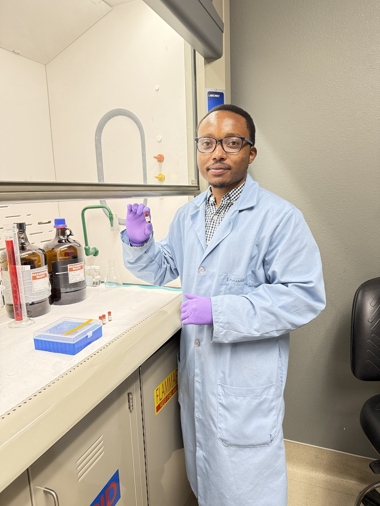

Advancing sediment-remediation research
Continuing laboratory evaluation of advanced oxidation and stabilization strategies for contaminated sediment at Texas Tech University.
Civil & Environmental Engineering
PhD Candidate & Graduate Research Assistant at Texas Tech University
I am an environmental engineer and PhD candidate integrating contaminant chemistry, treatment-process design, and advanced analytical methods to solve complex sediment and water challenges. My work spans advanced oxidation, adsorption, stabilization, contaminant fate and transport, and sustainable beneficial reuse, with target-contaminant interests including PAHs, PCBs, PFAS, dioxins, metals, and other persistent pollutants. I also bring industry experience in analytical-instrument technical support and environmental consulting.

About
Growing up in Rwanda, I saw how polluted water and inadequate treatment can affect daily life. That experience continues to shape my goal: develop rigorous, scalable remediation technologies that can serve communities facing water, soil, and sediment contamination.
I am a PhD candidate and Graduate Research Assistant in Civil and Environmental Engineering at Texas Tech University under Professor Danny D. Reible. My current work evaluates advanced oxidation, stabilization, and analytical-characterization strategies for contaminated sediment, with the goal of supporting risk reduction and sustainable beneficial reuse of impacted materials. My target-contaminant interests include PAHs, PCBs, PFAS, dioxins, metals, and other persistent contaminants. Earlier at Tianjin University, I studied reusable carbon-based adsorbents, sludge-derived biochar, catalytic treatment, and hexavalent chromium removal.
Before joining Texas Tech, I gained industry experience supporting high-tech analytical instruments at Beijing Purkinje General Instrument Co., Ltd., including UV–Vis spectrophotometers, atomic absorption spectrometers, gas chromatography, HPLC, XRD, and laboratory washing systems. I also completed an environmental consulting internship focused on environmental assessment, pollution control, climate impacts, waste management, and recycling. This combination of research, instrumentation, technical communication, publication, peer review, and international experience positions me to contribute across laboratory R&D, environmental engineering, technology development, and applied remediation teams.
Highlights
Continuing laboratory evaluation of advanced oxidation and stabilization strategies for contaminated sediment at Texas Tech University.
Completed 29 manuscript reviews across six environmental and chemical-engineering journals between October 2024 and January 2026.
Joined the Department of Civil, Environmental, and Construction Engineering in Lubbock, Texas.
Published research on reusable activated carbon and waste-derived biochars in the Journal of Water Process Engineering.
Received Tianjin University honors while developing expertise in adsorption, catalysis, biochar, and environmental instrumentation.
Research
Connecting contaminant chemistry, analytical evidence, and scalable treatment technologies for complex environmental systems.
Evaluating advanced oxidation, stabilization, and treatment-train strategies for contaminated sediments and impacted materials. Current work emphasizes PAHs and PCBs, with broader application interests in PFAS, dioxins, metals, and mixed-contaminant systems.
Applying adsorption, catalysis, advanced oxidation, and analytical chemistry to complex water matrices, with career interests in industrial wastewater, produced water, water reuse, and treatment-process optimization.
Developing waste-derived biochar and functional materials, investigating catalytic treatment, and advancing sustainable pathways that convert sludge, sediment, and other residuals into useful treatment media or construction resources.
Publications
Research spanning adsorption, biochar, advanced oxidation, sludge management, denitrification, and electrochemical water treatment.
E. Mutabazi, X.J. Qiu, Y.X. Song, C.X. Li, X.L. Jia, I. Hakizimana, J.J. Niu, Y.X. Zhao
Journal of Water Process Engineering, 57, 104679
View paper ↗X.J. Qiu, Y.X. Zhao, C.X. Li, Y.X. Song, E. Mutabazi, S. Yang, P. Sun, S. Wang
Chemical Engineering Journal, 483, 149265
View paper ↗I. Hakizimana, X. Zhao, C. Wang, E. Mutabazi, C. Zhang
Separation and Purification Technology, 331, 125533
View paper ↗X.J. Qiu, Y.X. Zhao, Z.C. Jia, C.X. Li, R.T. Jin, E. Mutabazi
Environmental Research, 240, 117313
View paper ↗X.J. Qiu, Y.X. Zhao, C.L. Zhao, R.T. Jin, C.X. Li, E. Mutabazi
Frontiers in Environmental Science, 11, 1275087
View paper ↗X.J. Qiu, Y.X. Zhao, C.X. Li, R.T. Jin, E. Mutabazi
Chemical Engineering Journal, 475, 146234
View paper ↗Q. Wang, Y.X. Zhao, C. Zhang, M.H. Zhao, X.L. Jia, E. Mutabazi, Y. Liu
Bioresource Technology, 380, 129088
View paper ↗Y.X. Zhao, Z.F. Yang, J.J. Niu, Z.H. Du, C. Federica, Z. Zhu, K.C. Yang, Y. Li, B.F. Zhao, T.H.P. Pedersen, C.G. Liu, E. Mutabazi
Journal of Environmental Sciences, 128, 224–249
View paper ↗Professional service
Verified review activity reported for the period October 9, 2024 to January 3, 2026.
Background
Texas Tech University · Lubbock, Texas, USA
Tianjin University · Tianjin, China
Outstanding Master's Student AwardTianjin University · Tianjin, China
Distinguished International Student Award, 2019Maddox Engineering Research Center, Texas Tech University · Lubbock, Texas, USA
Designing and evaluating advanced oxidation, stabilization, extraction, and analytical workflows for contaminated sediments and sustainable beneficial reuse. Current work includes PAHs and PCBs, with broader research interests in PFAS, dioxins, metals, and other persistent contaminants.Beijing Purkinje General Instrument Co., Ltd. · Beijing, China
Provided product and application support for UV–Vis, AAS, GC, HPLC, XRD, and laboratory washing systems; compared instrument specifications, supported international market development, and assisted customers with technical and after-sales needs.Beijing Purkinje General Instrument Co., Ltd. · Beijing, China
Supported technical communication, product demonstrations, instrument applications, customer engagement, and market-development activities for analytical laboratory equipment.Huanlian (Tianjin) Ecological Environment Design Institute Co., Ltd. · Tianjin, China
Contributed to environmental assessment and advisory work involving water, air, and noise pollution control, climate impacts, waste management, and recycling.GC–MS/MS, HPLC, IC, IC–MS/MS, ICP–MS, AAS, UV–Vis, FTIR, TOC analysis, extraction, sample preparation, and complex-matrix characterization
Advanced oxidation, adsorption, stabilization, sediment remediation, biochar, water and wastewater treatment, produced-water treatment interests, resource recovery, and beneficial reuse
CAPSim, MATLAB/Simulink, JMP, ArcGIS, Origin, Jade, technical writing, peer review, instrument support, and cross-functional collaboration
Contact
Upon completing my PhD, I will be open to research scientist, environmental engineer, remediation engineer, water-treatment R&D, consulting, and postdoctoral opportunities. I am especially interested in contaminated-sediment remediation; wastewater and produced-water treatment; resource recovery and waste valorization; contaminant fate and transport; and sustainable beneficial reuse. I welcome roles addressing PAHs, PCBs, PFAS, dioxins, metals, and other persistent contaminants through laboratory research, process development, field application, or technology implementation.